A short guide to signing in, keeping several accounts, and understanding why different Nostr apps handle account switching differently.
Sidecar is a signer. It keeps your Nostr keys safe in the browser's side panel and signs things on your behalf. When a website wants you to log in, publish a note, or decrypt a message, it doesn't get your key. It asks Sidecar, Sidecar asks you, and if you approve, Sidecar hands back a signature. Your keys never leave the extension.
Everything is protected by the PIN you chose when you set up Sidecar, and the panel locks itself after a period of inactivity you can adjust in Settings.
On Firefox, Sidecar lives in the sidebar rather than the side panel, with the same signer and the same features. Install it from Firefox Add-ons, and Firefox keeps it up to date. Two Firefox specifics: extensions stay off in private windows unless you allow them (Manage Extensions → Sidecar → Run in Private Windows), and Sidecar needs the site access it asks for at install — if you declined that, the panel shows a one-click Grant access banner until it's restored.
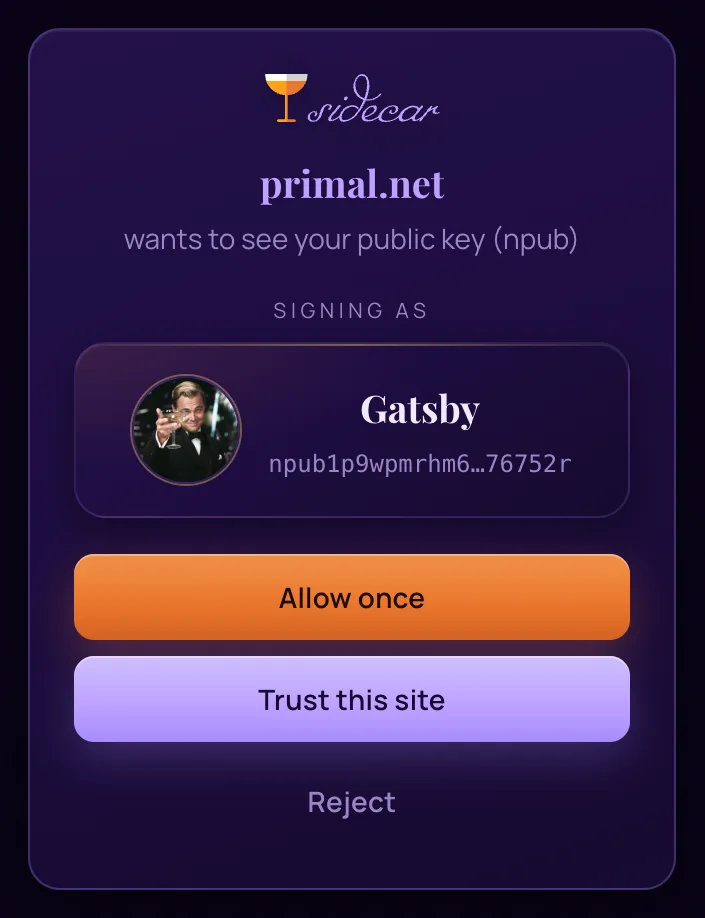
Sidecar happily holds as many accounts as you like. Generate a fresh one or import an existing nsec from the Accounts tab. One account is always the active account, marked with a checkmark on the Accounts tab. Click another to switch.
The active account is the one Sidecar offers when you sign in somewhere new, and the one used when you post from Sidecar's own composer. Think of it as the account currently "at the wheel."
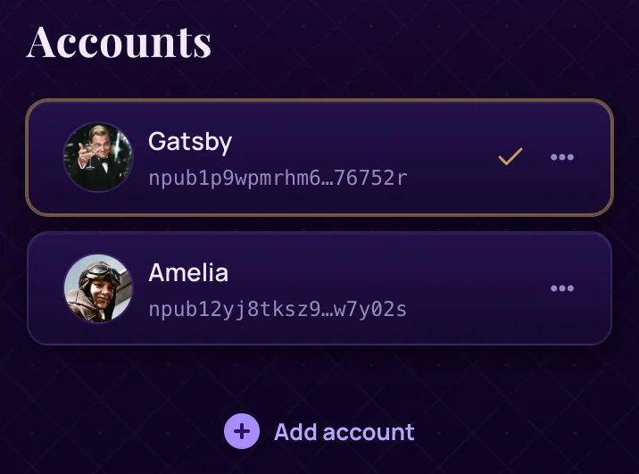
Sidecar holds your keys encrypted on this device and nowhere else. There is no account to recover, no email to reset against, and nobody to ask. If this browser profile is lost and you have no backup, the accounts in it are gone permanently. That's the trade you make for a signer that never sends your key anywhere, and it means the backup isn't optional housekeeping — it's the thing standing between you and losing an identity.
There are three backups, and they answer different questions.
Every account's menu has Back up private key, which shows the
nsec and offers it as an ncryptsec — the same key sealed
with a passphrase you choose. Prefer the ncryptsec anywhere the backup
might be read by someone else: in a password manager, in a note, on a printout in a
drawer. A bare nsec is the account. Anyone who reads it is
you, immediately and irrevocably.
Sidecar hides a revealed key again after twenty seconds and asks for your PIN to show it a second time. That isn't theater: the most common way a key leaks is being left on screen.
When you generate a new account, Sidecar offers a printable backup sheet — one page carrying the key as text and as a QR code, which Sidecar can read back later with Import by scanning. Paper doesn't get ransomwared, doesn't expire, and doesn't need a charged battery. A locked second page holds the same key under a passphrase if you'd rather not store it in the clear.
Settings → Security & backup → Vault backup exports every account's key, and any connected wallet, into a single encrypted file. This is the one to make before changing computers, and the one to make now if you've never made any. Import vault restores it.
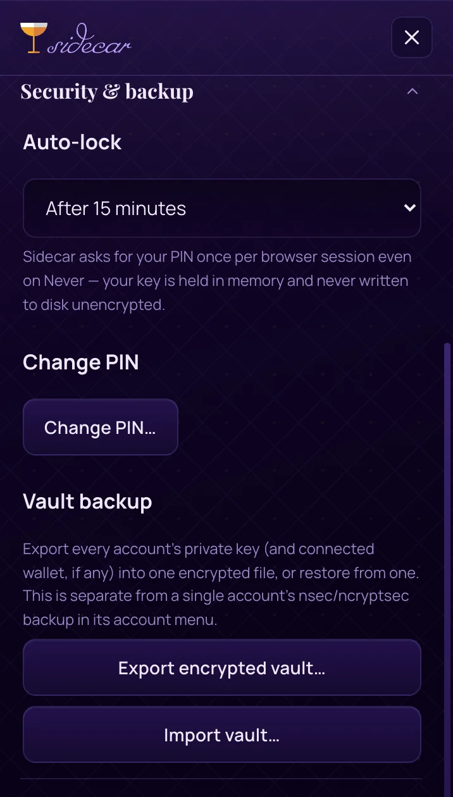
The same screen holds Auto-lock. Sidecar asks for your PIN once per browser session even with When browser closes selected, because the key is held in memory and never written to disk unencrypted — locking sooner only shortens the window in which an unlocked panel is sitting on an unattended machine.
A backup you have never restored is a hypothesis. Once you've made one, import it into a second browser profile and confirm the accounts arrive. It takes two minutes and it is the only way to know.
Here's the part worth reading twice. When you sign in on a site, that site pairs with the account you signed in as. From then on, the site keeps signing with that account, even if you switch the active account in Sidecar's panel.
That's deliberate. If you're signed in to a site in one tab and switch accounts in Sidecar to do something else, you would not want that open session to quietly start posting as someone else. Pairing keeps every session honest: each site stays the identity it logged in with until you log it out.
You can see every pairing in the Activity tab, under Connected sites. Each site shows the account it's pinned to, along with its permission level and recent signing history.
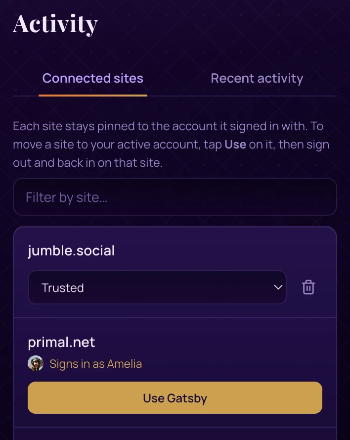
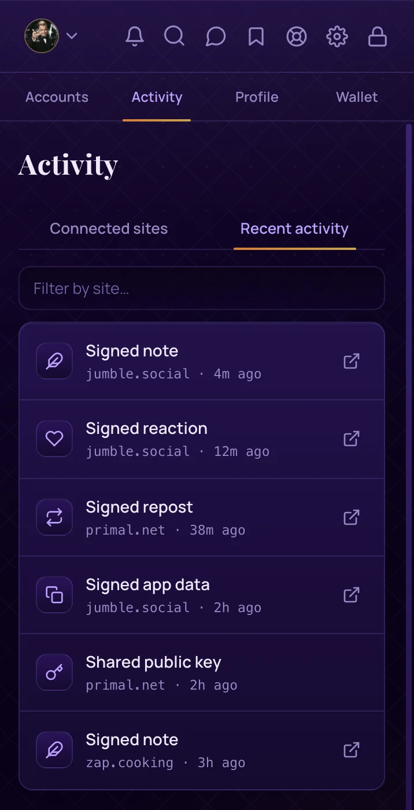
A site stays paired with the account it logged in with, so how you switch it to a different account depends on how that app handles users — and apps differ:
Some update the signed-in user when you reload. Switch accounts in Sidecar, refresh the page, and the app follows along.
Others keep their own multi-user switcher. You add each account to the app once, then flip between them inside the app — a refresh won't change who's signed in.
So logging out isn't always necessary. What matters is recognizing which kind of app you're in — the next section breaks down the two families. When a switch does call for a fresh login, the routine is the same everywhere: log out on the site, switch accounts in Sidecar, then log back in.
The shortcut. Whenever you switch the active account and a paired site is open in the current tab, Sidecar offers a Reload [site] button. For apps that re-check the extension on load, that single click usually does it.
A rule of thumb
The site decides who is signed in. Sidecar decides who signs in next.
Nostr apps fall into two families, and knowing which one you're in explains almost every "why am I still posting as the wrong account?" moment.
Primal, Iris, Snort, Zap Cooking, Nostrich, Nostter, Razr, Grimoire, and most others
These apps have a single signed-in user: whoever the extension provided at login. There's no account menu inside the app, so the identity changes only when the login changes.
To switch, switch accounts in Sidecar and use the Reload [site] button Sidecar offers right after. These apps ask the extension again when the page loads, so that reload re-pairs them with your newly active account. If a reload doesn't do it, the full log out and log back in routine always will.
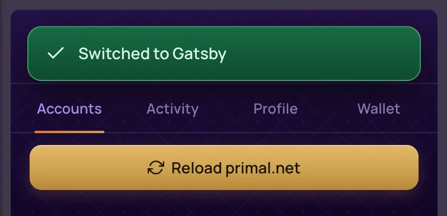
Jumble, YakiHonne, noStrudel, Coracle, Ditto
These clients keep their own list of accounts with a switcher inside the app. Each entry in that list is bound to the Sidecar account that was active when you added it. The client's switcher and Sidecar's switcher are two separate things: flipping one does not flip the other, and refreshing the page won't change the user, because the client remembers its own selection.
To get a second identity into the client's list: switch accounts in Sidecar first, then use the client's "add account" option and choose the browser extension method. Once each account is added and approved, you can hop between them using the client's own switcher.
A safety net. Because these clients can show one account while signing as another, Sidecar watches for the mismatch: once a site has signed in with more than one of your accounts, every post asks you to confirm who's signing, with a Multiple accounts used note on the prompt. So even when the client's switcher and Sidecar disagree, you catch it before anything publishes as the wrong you.
Background syncs are the exception. As you browse, clients quietly save app settings — read status, feed preferences, and the like. These aren't posts: nobody sees them in a feed, and they're harmless to write under either account. So Sidecar handles them for you rather than interrupting every few seconds to ask who's syncing. If you'd rather confirm each one, turn on Confirm background app-data syncs in Settings.
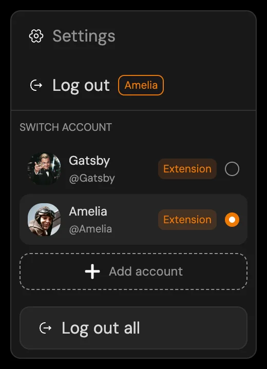
A pleasant detail: some clients, noStrudel among them, tell Sidecar exactly which account they expect on every signature. When Sidecar holds that account and it has approved the site, Sidecar signs with it automatically. In those clients, switching inside the app works seamlessly once each account has been added.
On a site where two of your accounts have signed in, Sidecar confirms every post, reaction, and DM — for the reason in the last section: only you can see which account the client is actually showing. That's the right default, but during a busy session it means a lot of tapping.
Relax mode is the escape hatch. On any confirm you'll see Auto-sign for the next with three choices — 5, 15, or 30 minutes. Pick one and Sidecar signs that site's requests for that account without asking again until the time runs out.
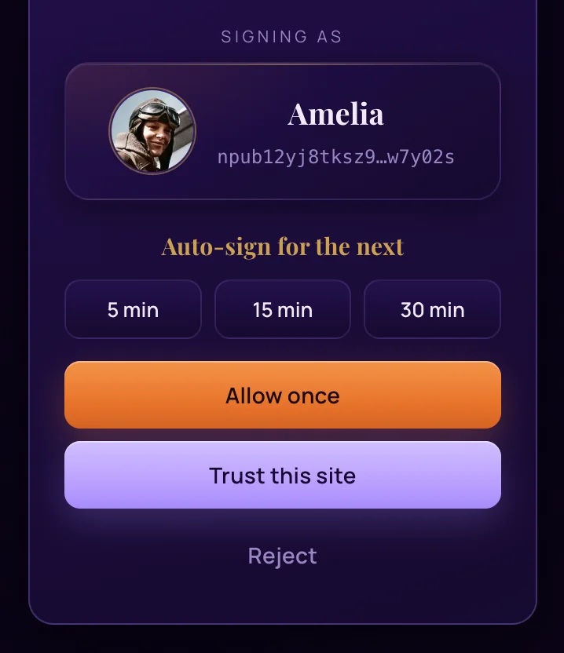
While a window is open, a status bar sits at the bottom of the panel with the account, the site, a live countdown, and a depleting bar. The dot is green, turning amber under the last minute. The toolbar icon also carries a badge with the minutes remaining, so you can tell at a glance from any tab. Tap the × on the bar to end it immediately.
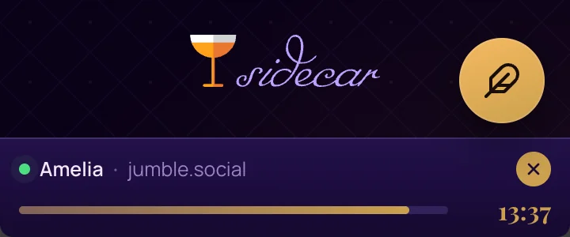
What it deliberately doesn't cover. Relax mode skips the repetitive confirms, not the ones that matter:
Worth being honest about the trade: within its window, relax mode signs without showing you each event. That's the point of it, and it's why the windows are minutes rather than hours, why only one runs at a time, and why the countdown is always on screen. If you're on a shared host and unsure which account the client has selected, approve one at a time instead — the per-signature confirm is the thing that catches a wrong-account post.
When one site asks you to sign several of the same kind of event at once, the approval offers Allow all with a count, and lists every request that one tap signs. There is a Reject all, and deliberately no Approve all: rejecting is always safe, while approving everything at once would sign requests you have not read.
Some requests come back from the same site forever — an app saving its settings every time you open it. On those approval cards you can tick Always allow this event type for this site. Sidecar then signs that kind of event from that site without asking again.
The grant is narrow on purpose. It covers one event kind — and when the event
carries a d tag, that one record rather than everything of that kind —
for that site only, signed by the account that approved it. It covers signing only:
the site can still never encrypt or decrypt anything without asking. Lock Sidecar
and the grant pauses with it — a locked keystore still asks for your PIN. Some kinds
can never carry the checkbox at all: anything that replaces your profile or follow
lists, anything that moves money, and the account-control kinds.
To see what you've granted, open the Activity tab: each site's row lists what it signs without asking, with an ✕ to revoke. Revoking puts the site straight back to asking.
Your follow list, mute list, and profile are replaceable events: each new version wholly replaces the last one, everywhere. There's no merge and no undo. So a client that publishes a short or empty list — through a bug, a bad sync, or a half-loaded page — doesn't just fail to add something. It wipes what was there.
This is the most common way people lose data on Nostr, and it happens quietly: the app looks like it worked, and you find out days later when your feed has gone empty. Sidecar can already bring back what was lost, from follows and mutes to your profile and relay lists. This is the half that tries to stop it happening.
Before signing one of these, Sidecar compares it to what you had. If the new version drops most of it, the prompt says so in plain numbers — not "this event modifies kind 3", but removes all 40 accounts you follow.
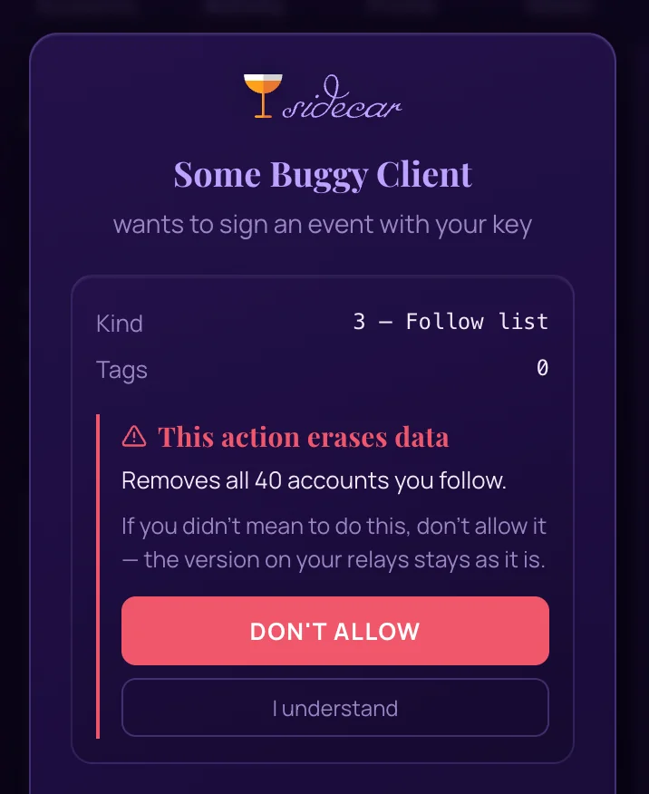
Approving takes a deliberate second step. Allow once and Trust this site start greyed out, and Don't allow sits right in the warning where your thumb already is. If the change really was intentional — you did just prune your follows — press I understand and the usual buttons come back. The point isn't to stop you; it's that erasing a list shouldn't be something you can do by tapping where you always tap.
This holds everywhere: on a site you've marked trusted, and in the middle of a relax-mode window. Both of those are shortcuts for the routine signing they were meant for, and this isn't routine.
One honest limit: Sidecar can only compare against a version it knows about — what it last signed for you, or what it saw on your relays when the panel loaded your profile. On a brand-new install, before it has either, there's nothing to compare and no warning will appear. So treat this as a safety net rather than a guarantee: the absence of a warning doesn't prove an event is harmless.
The bell collects replies, reactions, reposts, zaps, and mentions for the account you're currently using. It's deliberately not a feed: there's no browsing, no threading, and no infinite scroll. It answers one question, which is whether anything has happened that you'd want to know about, and then hands you off to your client for the rest.
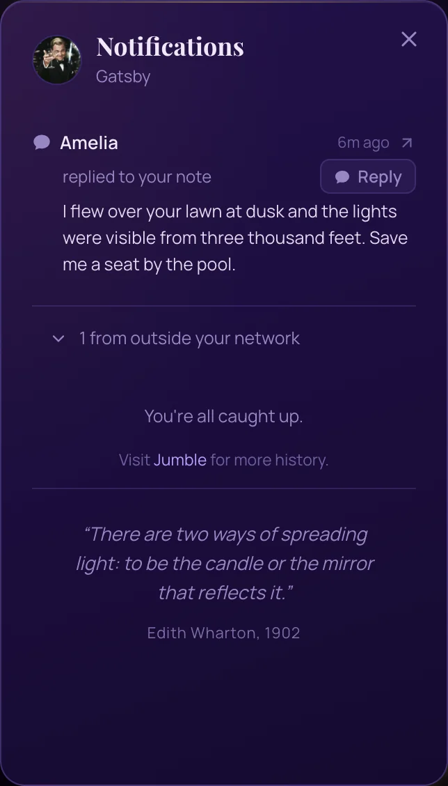
Replies and comments carry a Reply button that opens the composer with the note you're answering shown above the editor, where it stays through Preview and through the review countdown. The last screen before something publishes is the wrong place to lose sight of what it's a reply to.
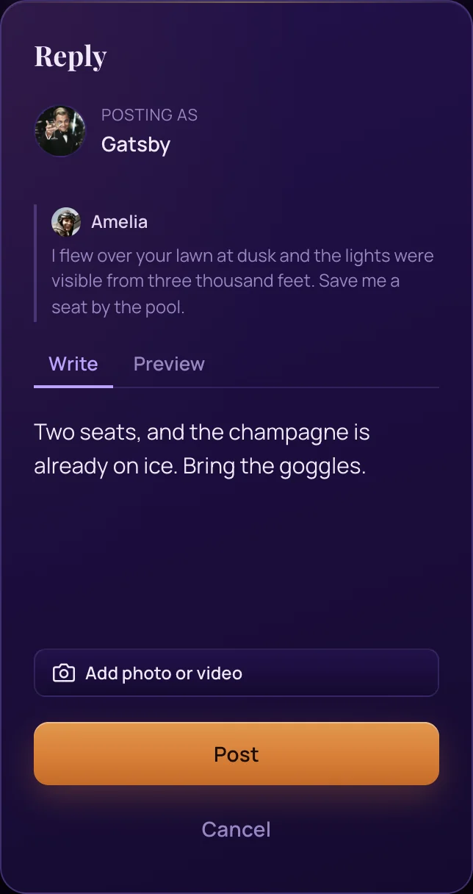
Reactions, reposts, and zaps get no Reply button, because there's no thread to join — the arrow at the top right opens the original in your client instead. Close the composer by accident and Sidecar offers the draft back the next time you open it.
The ⋮ menu on a notification can Mute the person, Mute this note and replies, or Mute the whole thread. A zap offers only the person who sent it. Each takes a second tap to confirm, the notification leaves at once, and the mute goes into the encrypted part of your mute list, so nobody reading the list can see who you muted.
Search results, and the profile card they open, have follow and mute buttons drawn as icons. Following takes one tap. Muting and unmuting take two. Unmuting removes a person wherever they are on your list, including mutes made in other clients.
Reply spam arrives from keys made minutes ago, which is what makes muting a losing game: every mute list is a denylist, and a denylist cannot outrun a keyboard that makes new keys. So the bell sorts instead. People you follow, plus anyone at least ten of your follows follow, appear normally. Everyone else is collected into a single counted row at the bottom that you can open whenever you like.
Nothing is hidden and nothing is deleted. That distinction is the whole design. A filter that hides is a filter that eventually eats the one reply that mattered — a stranger with a good answer, an introduction, a bug report from someone who found you cold.
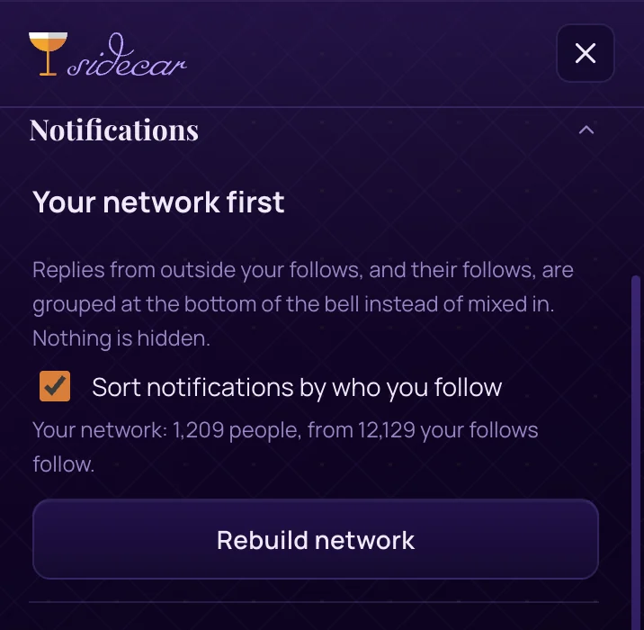
Building the network reads the follow list of everyone you follow, so the first run takes a moment and shows a progress bar. If it fails, or if you follow nobody yet, the sort is skipped entirely and everything shows — failing toward seeing too much rather than too little. Mute lists still apply on top: anyone you've muted in your client is dropped here as well.
Relays are the servers that carry your notes. Your relay list — NIP-65, edited on the Profile tab — is the public announcement of which ones to use: where to find what you've written, and where to send you replies and DMs. Other apps read it to reach you, so it's worth keeping small and worth keeping accurate.
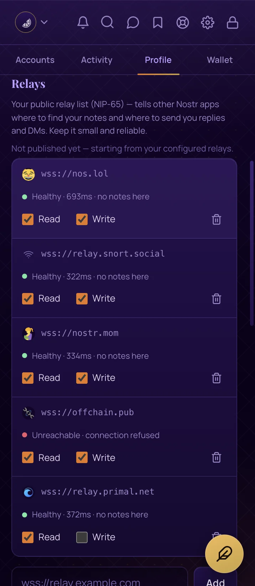
Read and Write are separate on purpose. A relay marked Write receives what you publish; one marked Read is where people should look for you, and where your replies arrive. A large relay you read from but don't publish to is a perfectly sensible entry, and so is a small paid one you publish to and nobody else can read.
Check relay health connects to each one and reports what happened: reachable or not, how long it took, and whether your notes are actually there. A relay that's up but holds nothing of yours is worth knowing about, because it usually means writes have been failing quietly.
A verdict only names a relay when at least one other relay answered in the same run. If everything fails at once the problem is almost never the relays — it's the connection, and saying otherwise would send you to check a service that was fine all along.
Paid and members-only relays ask connecting apps to prove who they are. Sidecar answers that challenge automatically for your own relays: the ones you've configured and the ones you've published. It won't answer for a relay it reached through somebody else's hint, because identifying yourself to a stranger's server is a disclosure and not one to make silently.
This only ever affected reading. A note carries its own signature, so publishing to a paid relay always worked — but a relay that gates reads had no way to know who was asking, and simply returned nothing.
Settings → Relays holds a small default set used to find your relay list in the first place, and as a fallback if it can't be reached. Once you've published a list of your own these take a back seat. Turning off Use bootstrap relays for an account excludes them from its reads and publishes entirely, except for the one discovery fetch that finds your list. Turning it off shows a second switch, on by default, that keeps reading them for notifications only, since replies often land on relays you don't write to. Your own list is edited on the Profile tab; Edit relay list in the same section takes you there.
A status is a short line about what you're doing right now: Working, Hiking, Out of office until Monday. Clients that read it show it beside your name.
Yours sits as a small balloon over your banner at the top of the Profile tab, pointing down at your picture. Tap it to change it, or use Set status next to Edit profile, which is always there. Set no status and there's simply no balloon.
It shows on one line. A long status is trimmed with an ellipsis rather than wrapping down over your picture, so keep it to a few words.
It is public, like everything else you publish. It goes to your relays as an ordinary signed event (NIP-38), so treat it the way you'd treat a note. "At the airport" tells people where you are.
A status stays until you change it. If you'd rather it expired on its own, pick a duration when you set it and Sidecar attaches an expiry your relays are asked to honor. Asked, not required — a relay may keep serving it past that time, so Sidecar treats an expired status as gone whether or not the relay agrees. Clearing it yourself is the only certain way.
Clear status publishes an empty one. That sounds odd and it's deliberate: a status is a replaceable event, so an empty one overwrites the old text everywhere the old text reached. Asking relays to delete the original instead is a request they're free to ignore, and anyone who already had it would keep showing it.
Sidecar only writes the general status. The spec also defines a music status, meant to be published automatically by whatever is playing your music, with an expiry matching the end of the track. A signer has no way to see what you're listening to, and typing it by hand is a worse version of what a music client does for free.
Sidecar's Wallet tab connects to a Lightning wallet you already have, using Nostr Wallet Connect. Sidecar never holds your funds; it just gives you balance, payments, and zaps right in the panel. Each account can have its own wallet connection.
If you don't have a wallet that speaks NWC yet, the wallet directory below has good options for every taste, custodial to self-custodial.
A zap publishes a public receipt naming you and the amount, which is what zap totals are counted from. A CLINK offer asks the payee's wallet directly, encrypted, and publishes nothing, so it counts toward no total.
Sidecar offers window.webln to pages only when no other Lightning
extension has claimed it first — the other wallet may be the one you chose on that
site. If you'd rather Sidecar answer everywhere, turn on Make default Lightning
wallet in Settings. Sidecar then steps in on pages where another
wallet answered first; that wallet stays reachable to the page, and turning the
setting off hands the slot back. Nothing changes on pages that are already open
until they reload or re-ask, so a payment always goes to the wallet the page
actually asked.
Podcast players that support Podcasting 2.0 let you send a show sats along with a short message, called a boostagram. Sidecar can pay those from the player, using the same wallet the rest of the panel uses.
The part that surprises people: a boost is several payments, not one. A show splits its value between the hosts, the producer, and often a platform fee, and each of those is paid separately. So a 100 sat boost split five ways asks you five times, once per recipient, and each card shows only that recipient's share. To send the whole thing on one approval, tick Allow this site to spend up to on the first card and give the site a daily limit. The rest of the split is then covered without asking, and you can change or revoke that limit any time from Connected Sites.
The card names the show and quotes your message rather than showing the recipient's 66-character node key, which is not something anyone can make a decision about. That text comes from the site, so treat it as a label rather than as a promise; the node is what actually identifies where the money goes.
Boosts need a wallet that supports keysend, which is how a payment reaches a node with no invoice involved. Not every wallet does. If yours doesn't, Sidecar says so rather than putting a payment in front of you that cannot succeed, and nothing is spent.
A NIP-05 is a verified handle that looks like an email — name@domain.org — but isn't one. It lets Nostr clients confirm that you control the pubkey you claim, by checking a small file your domain serves at a well-known address. Clients that support NIP-05 show a verified badge next to your name, and some use it to help people find you by your handle instead of pasting an npub.
You don't need your own server to get one. Many Nostr clients and services offer free or paid NIP-05 identifiers — check your favorite client's settings, or look for a provider. Once you have one, paste it into your profile (the nip05 field) and publish from Sidecar's Profile tab.
If your NIP-05 uses _ as the local part (_@domain.org), it verifies your domain without exposing a username — Sidecar shows just the domain.
A Lightning address (also called a LNURL or lud16 address) is a human-readable handle — name@wallet.tld — that anyone can send Bitcoin Lightning payments to without scanning a QR code or copying an invoice. Most Lightning wallet providers issue one when you create an account. If you connect an NWC wallet in Sidecar, your wallet may already have one; check your wallet's settings, then add it to your profile so clients can offer a zap button next to your posts. See the wallet directory for providers that support Nostr Wallet Connect.
Sidecar can play a livestream or a replay in a player above the panel, so you can watch while you do everything else it does. Open the radio icon to browse what is Live, Upcoming and Past, or paste an HTTPS video address. The player keeps going while you move around Sidecar, lock it or approve a signature, and closing it stops the stream.
Twenty streams show at first and more load as you reach the end of the list. Past and Upcoming read older streams from the relays when the ones Sidecar already has run out, and if a pass finds nothing, a Keep looking button offers another. The bookmark on a row saves the stream. Saved streams stay on this device and back up encrypted to your account, so they restore on another browser.
Click LIVE at the top left of the player to show or hide the list. The title beside it opens About stream, and the streamer’s name and picture open their profile card.
The chat button opens the stream’s chat. Replies, mentions and reactions are signed by the account you choose in the composer, like any other note. The bolt zaps the stream from your own wallet, and every comment has a bolt of its own to zap whoever wrote it. Press the bolt again, or any other control in the player bar, and the zap sheet closes. It also puts itself away once a payment is on its way, because nothing is left to decide on it. The toast “Zapping” and then “Zapped” carries the rest.
The number beside the bolt is the stream’s verified zap total. It pulses while Sidecar counts and can keep growing for a few seconds as it reads more relays. A plus means at least this much, and appears only when the total is hard to pin down. Sidecar counts only receipts it can verify against the host’s own Lightning provider, so the number can read lower than a site that counts every receipt.
Browsing reads public stream announcements from relays, without signing in. Playing a stream loads its video from the address in the announcement, so that host sees your IP address and which stream you are watching, as with any video link. Enable live video in Settings turns the whole feature off. The privacy policy lists the relays and hosts involved.
Sidecar ships twenty themes, in Settings → Appearance. They aren't color swaps: each brings its own display face, its own textures, and its own treatment of the wallet balance, so the panel reads as a different object rather than the same one repainted.
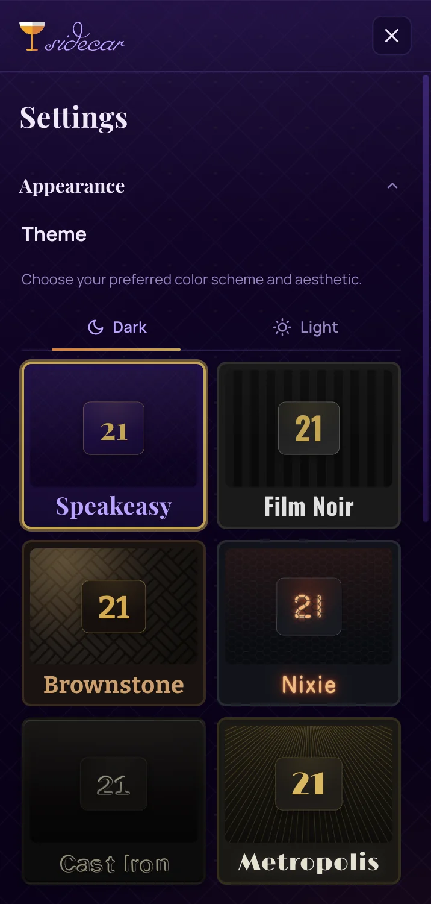
The Dark and Light tabs split the gallery by how much light the theme actually throws, which matters more than palette in a panel that sits beside a bright page all day. Every tile renders the same numerals in that theme's own face and colors, so what you preview is what you get.
Special editions are themes for a season, and are only worn while it lasts: Sleepy Hollow from October 1 to November 8. When one arrives, a card on the Accounts tab offers it once. While it is in season it also has a place of its own above the Dark and Light tabs, and wearing one never replaces your theme: it goes on over it for the account you are in. Choose any other theme, or Back to your own, to take it off. When the season ends the account goes back to its own theme by itself. If you would rather not be told, turn off Special editions → Tell me when one arrives.
Reduce motion sits underneath and turns off the animated wallet balance, the countdown, and the lightning strike on a completed zap. It follows your system setting by default.
Version 1.16.3
The full history, including earlier releases, is in the changelog on GitHub.
A directory of apps that work with Sidecar. Social, media, reading, commerce, and more.
OPEN THE DIRECTORY →Wallets that support Nostr Wallet Connect, ready to pair with Sidecar's Wallet tab.
BROWSE WALLETS →A friendly introduction to the protocol itself: keys, relays, zaps, and the rest.
START HERE →Found something confusing, or something this guide should cover? Tell us on GitHub.
OPEN AN ISSUE →